Made 16 Oct 2026, 17:25 AEDT from the design book, branch claude/design-book-20261016. Synthetic data, desktop-browser renders, not Luke's phone.
The approved screens
The 17 pictures you approved, liked or froze: the only pictures anyone copies from. Each says what to take and what to ignore. Then the four clips.
Sign in
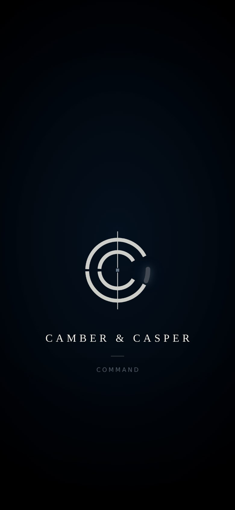
01 · LikedThe sign-in "Door", first moment: the Camber & Casper mark and wordmark on a deep, quiet ground.Take: The restraint, the glow, the wordmark treatment
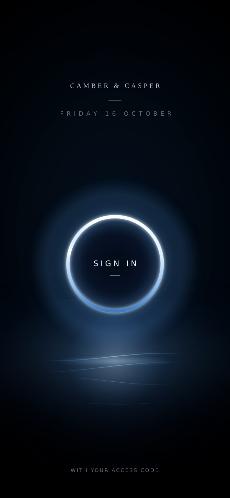
02 · LikedThe Door, second moment: a lit ring with SIGN IN, soft light, a horizon, the date, a foot line.Take: The ring and its light; the horizon; the quiet typeIgnore: The date is the day the picture was made
The first briefing (the locked reference)
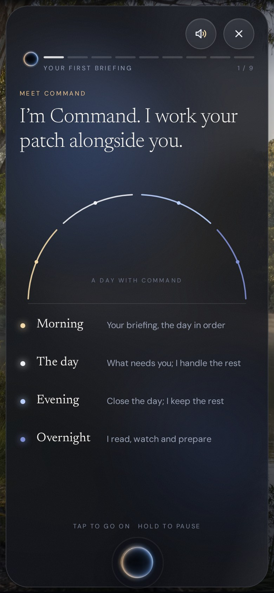
03 · LockedFirst briefing, page 1: "Meet Command", an arc for a day, four moments (morning, the day, evening, overnight).Take: Everything about the look: glass panel over a photograph; the progress segments with the small orb; read aloud and close as two round glass controls top right; the orb at the footIgnore: The word "patch" (Tom flagged it); the line "Tap to go on, hold to pause" (gestures unverified)
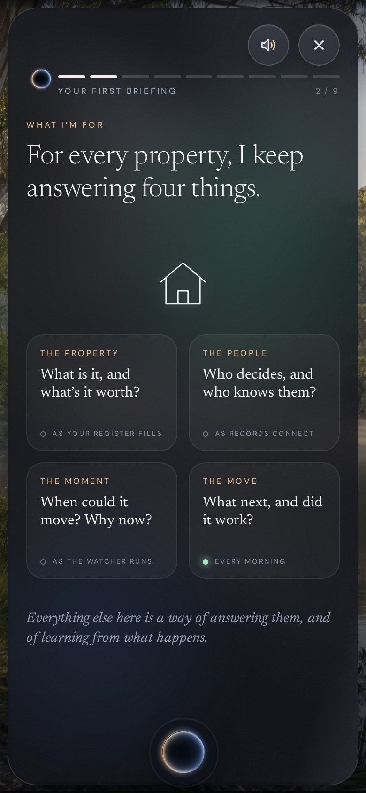
04 · LockedPage 2: the four things Command answers for every property, as four small state cards.Take: The four cards and their small status lines; the house markIgnore: Whether the four promises are all built is unverified (Tom asked for a fact-check)
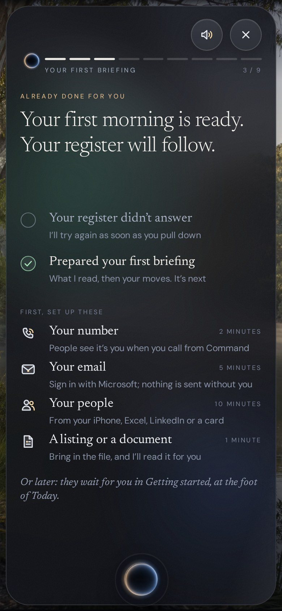
05 · LockedPage 3: what is done and what to set up (number, email, people, a listing), each with a mark and a time.Take: The set-up list: mark, title, one quiet line, time on the rightIgnore: The first row ("Your register didn't answer") is a test-fixture failure; "Your first morning is ready" is a readiness claim Tom flagged as premature
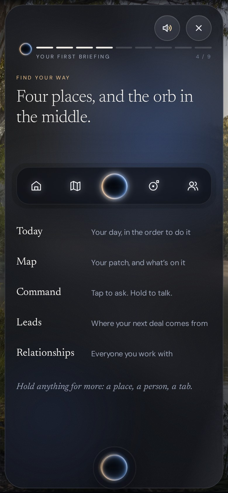
06 · LockedPage 4: "Four places, and the orb in the middle": the five-place navigation bar and what each place is.Take: The bar with the orb at the centre; a name and one line per placeIgnore: The wording is not final (Tom asked for a full plain-language pass)
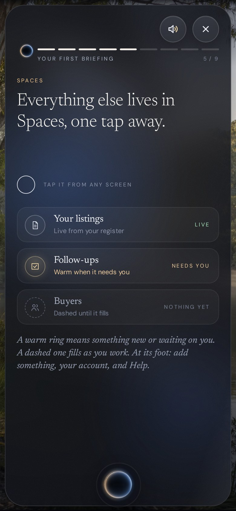
07 · LockedPage 5: Spaces, one tap away, with three example rows and a warm ring.Take: The calm explanation page; the ringIgnore: The rows are illustrations of Spaces' rows, not a component to reuse
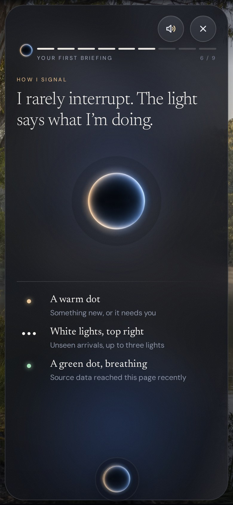
08 · LikedPage 6: the orb at the centre with WORKING beneath, and the three signals (a warm dot, white lights, a green dot).Take: The big orb with its rim and glow; the signal listIgnore: A claim of "rarely interrupt" must be true
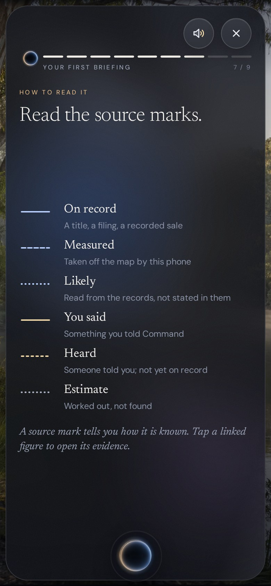
09 · LikedPage 7: "Read the source marks": six line styles for how known a fact is.Take: The line-style vocabulary: solid, dashed, dotted, gold solid, gold dashed, faintIgnore: Every mark shown must be true and linked to evidence
Today
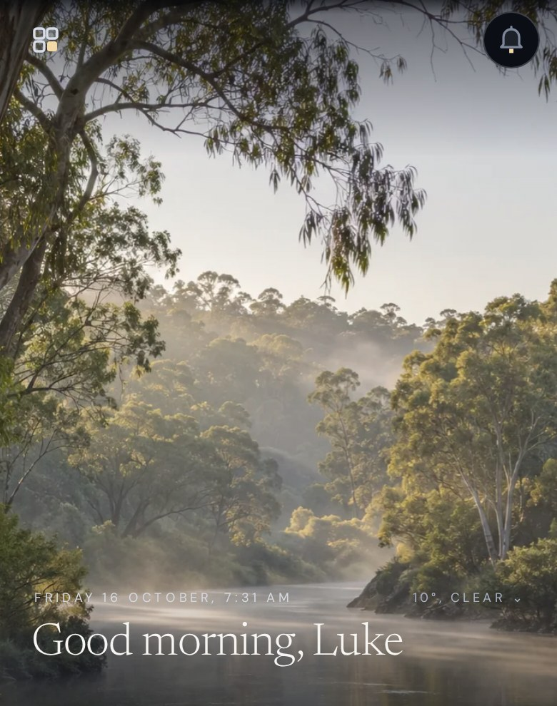
10 · LikedToday at arrival: "Good morning, Luke" over the Melbourne morning, with the quiet date, the Spaces control top left and notifications top right. The card is cropped away on purpose.Take: The greeting over the photograph; the quiet date line; the top controlsIgnore: Everything below the greeting (cropped). The date line is faint over the sky; that is not a model for contrast
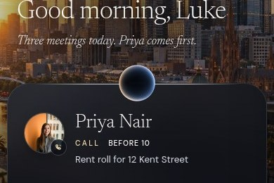
11 · ApprovedRound 7 approved drawing, detail: the greeting's second line, the orb riding the card's top edge, and the person card (Priya with a call badge, CALL BEFORE 10, the rent roll).Take: The orb on the card's edge; the face with its badge; the label and its time; the glassIgnore: The rest of that drawing is cropped: a dotted "Your day" line Tom later removed. The drawing's weekday was wrong12 · ApprovedRound 7 approved drawing, detail: the meeting label row, Sarah Lin's face, role, place, and the property line.Take: The label row (mark, MEETING, time, IN 15 MIN); the face; the role label; the place markIgnore: The property thumbnail here is a map render; Tom's rule is the listing's own photo. The lower part of the card (the question line, the faded count) is cropped on purpose. Spacing here predates later rules13 · ApprovedRound 8 approved drawing: time to leave with the car mark; the map fades into the glass; leave-by and arrive; the site; the selling agent; the drive; "Tap for directions"; the papers.Take: The whole composition: map as ground fading into the glass over its last third; the car; the hierarchy "Leave in 8 minutes"Ignore: Nothing flagged
Command
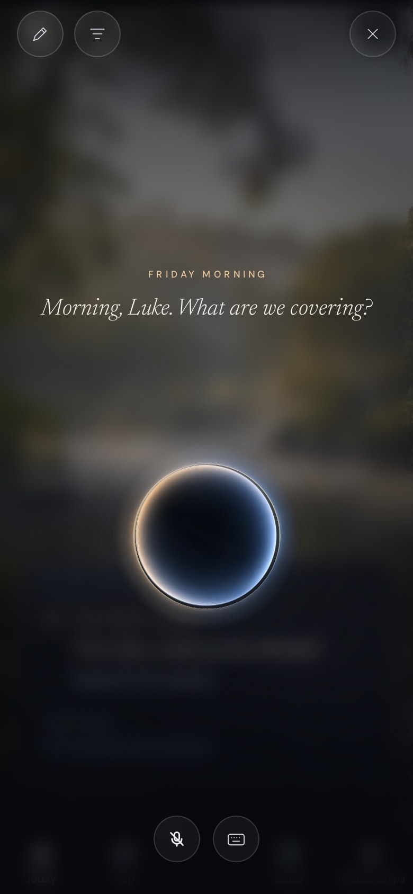
14 · LikedCommand opened from the orb: a large orb on a softened photograph, Command's italic voice ("Morning, Luke. What are we covering?"), close top right, mute and keyboard at the foot.Take: The big orb and its glow; the soft blurred ground; the italic voiceIgnore: The two small controls at the top left have unverified meaning
The Map (frozen)
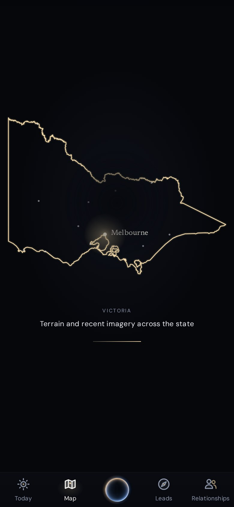
15 · FrozenThe Map, state view: a glowing outline of Victoria on a deep ground, one line of explanation, the tab bar with the orb.Take: The restraint and the glow
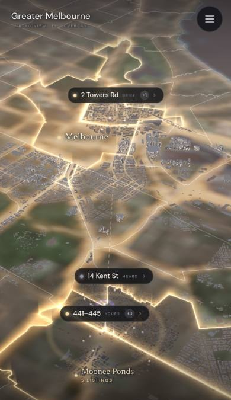
16 · FrozenThe Map, Greater Melbourne: boundaries glowing over the terrain with a few labelled places.Take: The glow and light playIgnore: The labelled place callouts are the Map's own; Tom has frozen the Map. Do not reuse that callout shape elsewhere
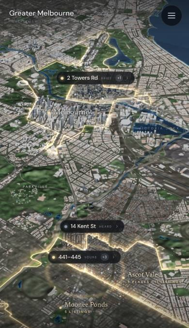
17 · FrozenThe Map, the city in 3D, with the same light.Take: The depth and lightIgnore: Same note on the callouts
Motion
01-door.mp4 · 16 sA vertical line, then the Camber & Casper mark draws itself, then the wordmark, then the lit ring, the horizon and the quiet loops02-briefing-opening.mp4 · 18 s"Welcome, Luke" over the river; a "Ready for you" sheet rises; page 1's arc draws with a moving point; pages change through a soft blur and cross-fade while the orb stays at the foot03-command-unfolds-from-orb.mp4 · 4.5 sCommand, just after the orb's tap: the orb breathing with a bright rim, Command's italic voice, the photograph softened behind. (The unfold itself takes under half a second and happens just before this clip starts.)04-map-arrival.mp4 · 8 sThe Map arriving: the state outline draws itself, a glow gathers at Melbourne, the line under it changes from "coming in" to "recent imagery across the state"